Un thème de l'épreuve d'optique géométrique et physique (OGP) (U42, coefficient 3) du BTS Opticien-Lunetier. Sur cette page : 4 définitions à savoir et 2 questions corrigées.
Angle d'incidence pour lequel la lumière réfléchie est totalement polarisée : tan iB = n2 / n1.
Pour comprendre : La vibration est perpendiculaire au plan d'incidence ; les rayons réfléchi et réfracté sont alors perpendiculaires.
À savoir par cœur
Lumière naturelle
Probable
Utilisée dans les sujets 2019, 2021, 2022
Lumière dont la vibration change de direction au hasard, sans direction privilégiée. Un polariseur parfait n'en laisse passer que la moitié.
Polariseur et analyseur
Probable
Utilisée dans les sujets 2019, 2021
Filtre qui ne laisse passer que la vibration parallèle à sa direction de polarisation.
Pour comprendre : Placé après un premier polariseur, on l'appelle analyseur : à 90° (polariseurs croisés), il éteint la lumière.
Loi de Malus
Probable
Utilisée dans les sujets 2019, 2021
Une lumière polarisée d'intensité I0 qui traverse un analyseur dont la direction fait l'angle θ avec la sienne ressort avec l'intensité I = I0 cos² θ.
Deux questions corrigées
Cherche d'abord ta réponse, puis ouvre la correction.
Type BTS 2022 · Niveau facile
Pour quel angle d'incidence la lumière réfléchie par la surface d'un lac (n = 1,33) est-elle totalement polarisée (angle de Brewster) ?
48,8°
53,1°
60°
36,9°
Voir la correction de la question 1
Réponse B. 53,1°
tan iB = n = 1,33 → iB ≈ 53,1°. À cet angle, rayons réfléchi et réfracté sont perpendiculaires (i + r = 90°). Des lunettes polarisantes bien orientées éteignent alors le reflet de l'eau. (48,8° est l'angle limite de réflexion totale, un autre phénomène ; 36,9° est l'angle de réfraction.)

Type BTS 2019 · Niveau moyen
Lumière naturelle à travers deux polariseurs parfaits dont les directions font 60°. Quelle fraction de la lumière sort ?
12,5 %
6,25 %
50 %
25 %
Voir la correction de la question 2
Réponse A. 12,5 %
Le 1er polariseur laisse passer la moitié de la lumière naturelle : 50 %. Puis loi de Malus : × cos²60° = × 0,25. Total = 0,5 × 0,25 = 0,125, soit 12,5 %.

Le QCM compte 2 questions sur ce thème. Chacune est corrigée et expliquée, et celles que tu rates reviennent toutes seules à 1, 3, 7, 14 et 30 jours.